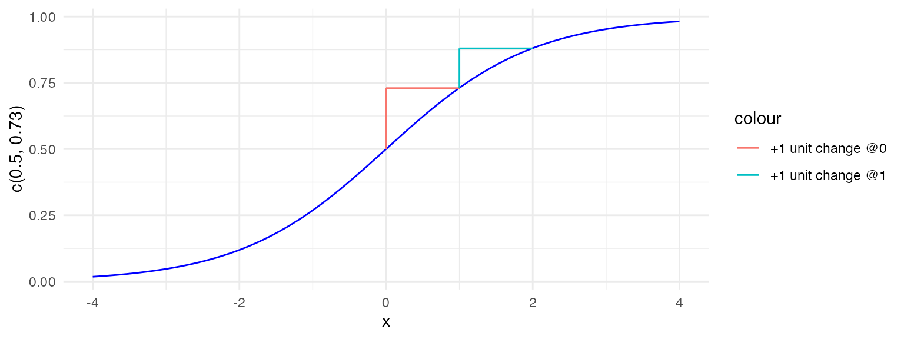
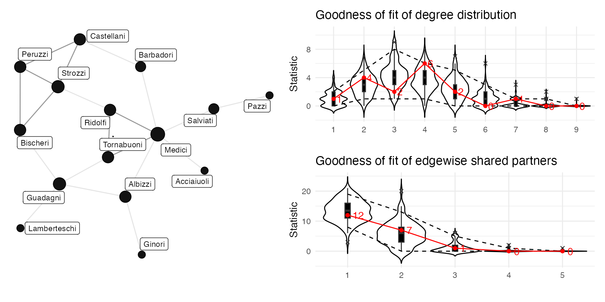

Modelling with ERGMs
by James Hollway, inspired by ERGM package vignettes
Source:vignettes/articles/modelling-with-ergms.Rmd
modelling-with-ergms.RmdStatic preview:
This is a static, read-only preview of the “Modelling with ERGMs”
tutorial. To keep it a preview, the code output and exercise solutions
are not shown here, and the quizzes are replaced with notes like this
one. Install the package and run run_tute() at the R
console to work through the tutorial interactively — running the code,
seeing the results, and getting hints, solutions, and quizzes.
This tutorial
This tutorial is inspired by the vignettes provided with the
ergm package, and aims to teach you how to model network
structure using exponential random graph models (ERGMs). Today we are
going to deal with the following topics:
Data
The ergm package contains several network data sets for practice examples. Today, we’re going to use data on florentine marriage ties.
# data(package='ergm') # tells us the datasets in our packages
data(florentine) # loads flomarriage and flobusiness data
flomarriage # Data on marriage alliances among Renaissance Florentine families
# ?florentine # You can see more information about the attributes in the help file.We see 16 nodes and 20 edges in this undirected network. Let’s get a little more information about the network. What is this network’s density? What attributes are attached to the nodes of this network that we might use in modelling?
net_by_density(flomarriage)
net_node_attributes(flomarriage)
net_tie_attributes(flomarriage)There are a few attributes for the nodes: priorates, totalties, wealth. All 3 are numeric valued attributes.
Visualisation
Now, let’s visualise this network (with labels), and sizing the nodes by their wealth. What do you observe? Describe the network in terms of configurations.
graphr(flomarriage, node_size = "wealth")
as_tidygraph(flomarriage) |> mutate_nodes(Degree = node_by_deg()) |>
mutate_ties(Triangles = tie_is_triangular()) |>
graphr(node_size = "Degree", edge_color = "Triangles")Network configurations are small patterns of ties within the graph or subgraphs, which are sometimes referred to as network motifs (Milo et al. 2002 in Lubell et al. 2014, p. 23). If a configuration represents an outcome of some social process occurring within the network, then that configuration occurring at a higher frequency in the observed network than expected by chance once other possibly relevant processes are controlled can be viewed as evidence for such a process/mechanism.
We see there is one isolate and a giant component, some nodes have more ties (Medici, Strozzi) and others are pendants, and it looks like there are several triangles.
Bernoulli model
An ERG model is run from the ergm package with the
following syntax:
ergm(dependentnetwork ~ term1 + term2 + ...)
This is a similar syntax to running regressions and other models in R. We begin a simple model of just one term estimating the number of edges/ties. This is called a Bernoulli or Erdos-Renyi model. We assign it to keep the results as an object:
flom.bern <- ergm(flomarriage ~ edges)
tidy(flom.bern) # To return the estimated coefficients, with p-values etc.
glance(flom.bern, deviance = TRUE) # To collect the deviance, AIC and BIC, etc.These outputs tell us:
- the parameter estimate (-1.6094), standard error (0.2449), and p-values with typical significance codes (<1e-04 ***)
- the loglikelihood, deviance, AIC(110.1) and BIC (112.9) based upon them (discussed in Hunter and Handcock, 2006).
So what is AIC/BIC?
The Akaike Information Criterion (AIC) estimates how much information is lost in the process of modelling some data. It is calculated from the likelihood of all the observations under the model and the number of parameters in the model. Since it thereby rewards fit but penalises for model complexity, it not only helps us guard against overfitting, but also helps compare model specifications fit to the same observed data. Basically: pick the model with the lowest AIC.
Otherwise very similar to AIC, BIC penalises model complexity more severely. Downside: it is likely to favour very simple models, especially for smaller, less representative training datasets.
Interpreting results
How to interpret the results from this model, shown below for convenience?
tidy(flom.bern)Interpreting results from a logistic regression can be tricky, because the relationship between the predictor(s) and response variable is non-linear. Here I wish to introduce you to a few options.
Log-Odds
The first option is to try and interpret the log-odds coefficients
directly. The estimates from logistic regression characterize the
relationship between the predictor and response variable on a log-odds
scale. Since there is only one term in this model, and it is
edges, this means that the log-odds of a tie
forming between any two nodes in the network is -1.6094.
Er, what? What does that mean? Turns out there is no real intuitive way to interpret log-odds. Moreover, as we will later see, in network models, effects often overlap, which mean that instead of interpreting the effect of a one-unit change in on the log-odds of , we need to consider the combined effect of changes in multiple s on the log-odds of .
Sign-ificance
One option for interpretation is what I call “sign-ificance”. This involves obtaining what information we can from this table of results. There are two key pieces of information available:
- The sign of is either:
- +: (increases in ) increases
- -: (increases in ) decreases
- The p-value tells us whether (and to what extent) statistically differentiable from zero
- small p-value (e.g. < 0.05): unlikely to have occurred by chance
- large p-value (e.g. > 0.05): could have occurred by chance
Together this is sufficient for hypothesis-testing: it tells us whether there is a “signal” for a pattern in the data that goes in the same direction as hypothesised and unlikely to appear just by chance. Therefore common to see articles using this approach where authors are only focused on testing a particular hypothesis, and helps avoid problems with using odds-ratios (and log-odds) to compare effect sizes within and across models (see below).
Try it yourself:
This section includes an interactive quiz in the live tutorial — run
run_tute() at the R console to try it.
However, since there is no direct, intuitive way to interpret the log-odds coefficients substantively and among each other, this is not the most useful way to present results such that e.g. policy-makers know what to expect.
Odds Ratios
Another approach is to transform the logit’s log-odds coefficients into something more intuitive to support substantive interpretation. Recall from Stats I that odds are a different way of thinking about probability. The odds ratio is the ratio of the odds of an event to the odds of another thing happening, or a change in the odds of associated with a one unit change in the covariate.
We can obtain odds ratios by simply exponentiating logistic regression coefficients:
where
is the change in
(usually 1 unit). It is straightforward enough to obtain odds ratios in
R, but there is also an option to obtain odds ratios instead of the
log-odds directly in the tidy() function.
exp(coef(flom.bern)) # 0.2
tidy(flom.bern, exponentiate = TRUE, conf.int = TRUE) # To return the odds ratios, with confidence intervals etc.Odds are much more intuitive to interpret than log-odds. Odds range from 0 to \(\) (but never negative). In this edges-only model, the edges term works like an intercept, so its exponent, 0.2, is the odds of a tie, \((Y=1)/(Y=0)\). If the odds are 1 (1:1), then event and non-event are equally likely. If the odds are greater than 1, then the event is more likely than the non-event. If the odds are less than 1, then the event is less likely than the non-event. In other words:
- Odds>1: \((Y=1) > (Y=0)\)
- Odds<1: \((Y=1) < (Y=0)\)
- Odds=1: \((Y=1) = (Y=0)\)
So odds of 0.2 mean that a tie is a fifth as likely as no tie, a probability of 0.2/1.2, or about 1/6.
The exponent of a covariate’s coefficient is instead an odds ratio: it is the factor by which the odds of a tie change for each unit increase in that covariate. An odds ratio above 1 makes a tie more likely than it would otherwise be, but not necessarily more likely than no tie, since that also depends on the baseline odds.
- OR>1: the odds of a tie rise as \(X\) increases
- OR<1: the odds of a tie fall as \(X\) increases
- OR=1: \(X\) makes no difference to the odds of a tie
Predicted Probabilities
Yet, what we really care about, in most cases, is not the odds of an event per se, but the effect (of changes in ) on the probability of the actual event of interest. To obtain probabilities for logistic models is a bit more involved than with ordinary least squares (OLS) regression though, since effect of covariates is linear only with respect to the log-odds, not itself. Because model nonlinear, real net effect of a change in depends on the constant, other s and their parameter estimates. Unlike in a linear regression model, the first derivative of our (binary) logit function depends on and \(\):
Practically, this means that if you’re interested in the effect of a one-unit change in on , how much change there is depends critically on “where you are on the curve”.

This means we need to calculate predicted probabilities of
at specific values of key predictors. In our simple Bernoulli model,
we’re modelling only the number of edges, and so we only need to
condition our predicted probabilities on this one variable. We can
calculate the probability of a tie forming between any two actors as
follows, indicating the addition of a tie by increasing the edges count
by 1 (later there is an example of how to do this for more complex
models with multiple variables). However, we can also obtain this
information by using the handy predict() function. We can
simply pass data on our independent variables, either in-sample,
out-of-sample, or totally-made-up, to predict() and see
what probability of a 1 would be predicted by the model.
exp(coef(flom.bern)) / (1 + exp(coef(flom.bern)))
adj <- predict(flom.bern, output = "matrix")
adj[is.na(adj)] <- 1
adj * t(adj)We can see here an estimated probability of a tie forming between any two actors of 0.1666667. Wait, where have we seen this number before? This is the same number that we obtained for the density of the network (0.1666667).
Summary
So, interpreting ERGM results can be a little tricky, but for now remember three points:
- Nearly all of these approaches require one to be cognizant of “where we are on the curve”.
- When it comes to interpretation, a picture really is often more valuable than text or tables, and can help guard against misinterpretation.
- With very rare exceptions, never a good idea to present quantities of interest without their associated measures of uncertainty.
Assessing goodness-of-Fit
Simulating
So we have a Bernoulli model for the Florentine marriage network.
Once we have estimated the coefficients of an ERGM, the model is
completely specified. It defines a probability distribution across all
networks of this size. But is this a good model? If the model
is a good fit to the observed data, then networks drawn from this
distribution will be likely to “resemble” the observed data. To see
examples of networks drawn from this distribution we use
simulate():
flom.bern.sim <- simulate(flom.bern)
graphr(flomarriage) + ggtitle("Observed") +
graphr(flom.bern.sim) + ggtitle("Simulated")So using simulate(), we get a network drawn from the
distribution of networks generated by our Bernoulli model. As such, we
can expect it to look similar to the observed network in some ways.
Since the Bernoulli model is generating networks of similar density on
the same number of nodes, these features will be fairly well captured.
Yet you may see the number of isolates, degree distribution, geodesic
distances, and appearances of triangles all change.
GOFing
What happens if you run the chunk above again? And again? Do they
look the same? Because each simulation looks a bit different, we should
try and simulate many, and then examine whether features of the observed
network are being well-captured in general. We could just
simulate many networks, simulate(flom.bern, nsim=100), and
then analyse them according to various network statistics of interest,
but ergm also has a function – gof() – that
does this for us. Let’s test for all the normal structural features:
(flom.bern.gof <- gof(flom.bern, GOF = ~ distance + degree + espartners))
plot(flom.bern.gof, statistic = "dist") # geodesic distances
plot(flom.bern.gof, statistic = "deg") # degree distribution
plot(flom.bern.gof, statistic = "espart") # edgewise shared partners
# plot(flom.bern.gof, statistic = "triadcensus") # geodesic distancesThese plots compare the observed and simulated networks on various auxiliary network statistics such as the degree distribution, geodesic distances, and edgewise shared partners. The thick red (or otherwise highlighted) line annotated with numbers represent the observed statistics. Box/whisker and violin plots show the distribution of the statistic across the simulated networks.
Looking at the plots, we see that the model did not do a very good job at predicting the network structure. While the geodesic distances were fairly well captured (this is easy in a small network like this), we can see some over- and under-estimation of the degree distribution and edgewise shared partners.
What does this mean for our Bernoulli model? This model was not great. We only had one covariate (edges) and so just modelled the unconditional probability of a tie appearing (anywhere…). We should add covariates that may better explain the degree level and triangle formation/clustering we see in our network. We need additional modelling!
Markov model

Let’s review what we know about the marriage network to get a better fit. There are some nodes with more activity (higher degree) in this network than others, and some triangle configurations appear. Yet our Bernoulli model (unsurprisingly) did not capture these features well. It overestimated nodes with a degree of two (there are actually only two, but the model is expecting around four), and underestimated nodes with degrees of one (there are four pendants, whereas the model expects around three) or three (the model expects around 4, but six are observed). While the Bernoulli model got the density perfectly right, duh, it seems that it is not capturing other features of the network of interest. Indeed, most social network analysts would find this unsurprising, as they consider social ties more than just random chance.
Convergence
Since the Bernoulli model was misjudging “clustering”, let’s add a
term often thought to be a measure of “clustering”: the number of
completed triangles. Because this model involves broader
dependencies, the estimation draws on MCMC and is thus stochastic. This
means that your output may differ slightly.
flom.mark1 <- ergm(flomarriage ~ edges + triangle)
# Add verbose=T to watch for the convergence test p-value and
# log-likelihood improvement to go down!
plot(flom.mark1)
tidy(flom.mark1)
glance(flom.mark1)First, the console output reports that the estimation procedure has converged on stable estimates with 99% confidence (p-value < 0.0001). You can also visually check convergence by plotting the model object. In the plot, we see that the log-likelihood stabilises over time, indicating convergence.
Interpretation
How do we interpret the coefficients now that the model is more complex? First, we can (seemingly) ignore the edges/intercept now, even if significant, as it will just be counterbalancing the other effects in the model. In the results, we see that the MCML estimate for triangles is not statistically significant. But if we try and interpret it anyway, for the practice, we see that we cannot completely ignore the edges coefficient, because it is part of the story of when and where ties form. For endogenous effects relating to the structure of the network, the coefficients need to be interpreted with the coefficient of the edges (the intercept). For exogenous effects (e.g. the monadic covariate ‘wealth’ later), the coefficients can be interpreted separately. An extra tie is perhaps not just an extra tie, but could also create one or more triangles, and an extra triangle will always create an extra tie, etc. So it depends…:
- if the tie considered will not add any triangles to the network,
log-odds are: Edges
- if it will add one triangle to the network, log-odds are: Edges +
Triangle
- if it will add two triangles to the network, log-odds are: Edges + Triangle x 2 and so on.
So we need to think about working out the probabilities based on the tie’s context:
# for edges + triangle
exp(coef(flom.mark1)[[1]] + coef(flom.mark1)[[2]])/(1 + exp(coef(flom.mark1)[[1]] + coef(flom.mark1)[[2]]))
# for edges + 2 triangles
exp(coef(flom.mark1)[[1]] + 2*coef(flom.mark1)[[2]])/(1 + exp(coef(flom.mark1)[[1]] + 2*coef(flom.mark1)[[2]]))
probs <- predict(flom.mark1, output = "matrix")
probs["Barbadori","Ridolfi"]
probs["Albizzi","Tornabuoni"]Is it any good?
So now we have a properly converged model. But does it fit? (These two things are independent) Let’s test for all the normal structural features. We want to check fit against auxiliary statistics because we want to know if we might be missing anything.
flom.mark1.gof <- gof(flom.mark1, GOF = ~ degree + espartners)
(plot(flom.bern.gof, statistic = "deg")/
plot(flom.mark1.gof, statistic = "deg")) |
(plot(flom.bern.gof, statistic = "esp")/
plot(flom.mark1.gof, statistic = "esp"))So far we have (mostly) fitted a model to the observed network using
only structural effects. But we are often interested in these effects on
top of traditional explanations, or as controls for those traditional
explanations. Below consider the effect of two potential explanations:
money (the nodal covariate nodecov(wealth)) and the related
business network (dyadcov(flobusiness)).
For more effects and more flexible uses of such effects, consult the
ergm manual: help('ergm-terms')
For a more complete discussion of these terms see the paper
`Specification of Exponential-Family Random Graph Models: Terms and
Computational Aspects’ in J Stat Software v. 24. (link available online
at http://www.statnet.org)
Social circuit models
New dataset
The Florentine dataset was relatively easy to fit. Sometimes social
networks can be considerably more difficult to model. Let’s try and
model a larger, more complex network, faux.magnolia.high
from the ergm package. Load it, call up the
documentation, and visualise the giant component.
# ?faux.magnolia.high
data('faux.magnolia.high')
faux.magnolia.high
# ergm() needs a 'network', so we take the giant component and convert it back
magnolia <- as_network(to_giant(as_igraph(faux.magnolia.high)))
(graphr(magnolia, labels = FALSE, node_color = "Grade", node_size = 0.2) + ggtitle("Grade")) +
(graphr(magnolia, labels = FALSE, node_color = "Sex", node_size = 0.2) + ggtitle("Sex"))So we now have 1461 vertices and 974 edges We also have four attributes: grade, race, sex and vertex.names Let’s pick up where we left off, with fitting a covariate-based model:
magn.covr1 <- ergm(magnolia ~ edges + nodematch('Grade', diff = T) +
nodematch('Race', diff = T))
summary(magn.covr1) Troubleshooting
Note that the nodematch coefficients for Other and Hispanic are estimated as -Inf. Why is this?
table(magnolia %v% 'Race') # Frequencies of race
mixingmatrix(magnolia, "Race") Looks like there are some of every race, what’s the problem? Ah, so
the problem is that there are very few students in the “Other” category,
and these students form no homophilous (within-group) ties. Same with
“Hispanic” students. The empty cells are what produce the
-Inf estimates. To avoid this, you can remove this category
from the nodematch() call.
Degeneracy
There are also more serious issues: When a model is a particularly poor representation of the observed network, estimation may be affected. In the worst case scenario, simulated networks will be so different from the observed network that the algorithm fails altogether. This can occur for two general reasons.
- the simulation algorithm may fail to converge, and
the sampled networks are thus not from the specified distribution.
- the model parameters used to simulate the networks are too
different from the MLE, so even though the simulation algorithm is
producing a representative sample of networks, this is not the sample
that would be produced under the MLE.
For more detailed discussions of model degeneracy in the ERGM
context,
see papers in e.g. Social Networks v.29 and J Stat
Software v. 24.
Now let’s try to fit a triangle model like with the Florentine dataset above:
magn.mark1 <- ergm(magnolia ~ edges + triangle)Did you get an error? That’s because in the process of trying to fit this model, the algorithm heads off into simulating networks much denser and clustered than the observed network. This is a big problem, and such a clear indicator of degeneracy that the algorithm cuts off to avoid heading off into areas that would cause memory issues. Degeneracy is a feature of how well the suggested model compares to the observed network
If you have a degenerate model, there is some ‘witchcraft’ (art +
science) that can be done to tweak the way the simulations are
generated, and I can offer some assistance with that if you show me your
?mcmc.diagnostics, but more often than not it’s a problem
of how the model is specified.
A good rule of thumb, if facing such an issue, is to:
- make sure you include degree- or centrality-based effects in addition to closure-based effects like triangles;
- use geometrically weighted or alternating forms of both centrality
(
gwdegree) and closure/triangle (gwesp) effects.
So let’s try that now:
magn.str <- ergm(magnolia ~ edges + gwdegree(0.25, fixed = T) +
gwesp(0.25, fixed = T))
plot(magn.str)Excellent, now we’re getting somewhere! It converged, not bad. Everything is highly significant, and both gwdeg and gwesp are positive. A positive gwdegree effect generally means that preferential attachment is operating. A positive gwesp effect generally means that there is closure. By fixing the alpha for each at 0.25, we’re saying that successive contributions to the statistic matter less though (which helps us avoid suuper dense networks, etc.)
But we don’t want to just see whether there is an aggregation of ties around particular nodes (positive gwdegree) and collections of ties (positive gwesp), we want to know whether e.g. this is really preferential attachment – an endogenous effect – or could it be just that the ties are collating around particular nodes because of their attributes. That’s why we also need to model these as a multivariate model together with these possibly confounding variables/alternative explanations.
magn.attr <- ergm(magnolia ~ edges + gwesp(0.25,fixed=T) + gwdegree(0.25,fixed=T) +
nodematch('Grade') + nodematch('Race') + nodematch('Sex'))
plot(magn.attr)Success! (though one could maybe increase the MCMC sample size and/or interval) In practice it might take more trial and error to find this solution…
So now we have a final model for (the main component of the) Magnolia high school. What does the model say? Everything is significant and positive, suggesting that all this matters. But that there are still significant effects for gwdegree and gwesp, even as we control for grade, race, and sex homophily, suggests that these statistically significant effects may represent endogenous effects over and beyond what can be explained by the other variables and indicating that there may be such network mechanisms as ties collecting around already popular nodes or joining two-paths operating here.
Now that you have a fitted model, let’s see how well it fits:
magn.attr.gof <- gof(magn.attr, GOF = ~ degree + distance + triadcensus + espartners - model)
plot(magn.attr.gof, statistic = "deg")Looks ok, though there’s still some over and underestimation, so there’s room for improvement… Let’s also compare a simulated network with the observed network
magn.sim1 <- simulate(magn.attr)
graphr(magnolia, node_color = "Grade", node_size = 0.2, labels = FALSE) +
ggtitle("Observed") +
graphr(magn.sim1, node_color = "Grade", node_size = 0.2, labels = FALSE) +
ggtitle("Simulated")Note: if all else fails, simulated networks can help diagnose problems
Task 3: Run an ERGM on the Florentine business network with terms capturing centrality, cohesion, and the influence of monadic (nodal) and dyadic covariates all at once. Check convergence and fit and interpret the results.
flob <- ergm(flobusiness ~ edges + gwdegree(0.25, fixed = T) + gwesp(0.25, fixed = T) +
nodecov('wealth') + dyadcov(flomarriage))
tidy(flob)
glance(flob)What can we tell from this? Model convergence: Convergence test p-value: 0.0080. Converged with 99% confidence. Edges (-), gwesp (+), and marriage (+) were statistically significant. The probability of seeing a tie is much higher when nodes are already connected through a marriage tie!
Let’s analyse GOF
(flob.gof <- gof(flob, GOF = ~ degree + triadcensus + espartners - model))
plot(flob.gof)Free play
Try it yourself:
This section includes an interactive quiz in the live tutorial — run
run_tute() at the R console to try it.
While these are the conclusions from this ‘play’ data, you may have
more and more interesting data at hand. Take a look, for example, at the
fict_actually data in the manynet package.
How would you go about specifying such a model? Why is such an approach
more appropriate for network data than linear or logistic
regression?